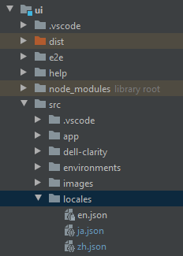

安装 ngx-translate模块包
1
2
| npm install @ngx-translate/core --save
npm install @ngx-translate/http-loader --save
|
ng6 需引入ngx-translate 10.0以上版本
创建 i18n 语言文件
在src文件夹下创建 国际化语言文件夹 locales，在locales文件夹下创建相应的语言包文件，如图

建议放在assets/i18n文件夹下
根模块app.module.ts 导入该模块
导入所需要的包
1
2
| import {TranslateModule, TranslateLoader} from '@ngx-translate/core';
import {TranslateHttpLoader} from '@ngx-translate/http-loader';
|
因为我们采用的是外部文件配置语言包的方法，所以还需要引入http模块
1
| import {HttpClientModule, HttpClient} from '@angular/common/http';
|
模块配置
1
2
3
4
5
6
7
8
9
10
11
12
13
14
15
16
17
18
19
20
|
export function createTranslateHttpLoader(http:HttpClient){
return new TranslateHttpLoader(http, './locales/', '.json');
}
@NgModule({
declarations: [
AppComponent
],
imports: [
TranslateModule.forRoot({
loader:{
provide:TranslateLoader,
useFactory:[createTranslateHttpLoader],
deps:[HttpClient]
}
})
],
providers: [],
bootstrap: [AppComponent]
})
|
在组件中使用
1.ts文件使用translateService服务
1
2
3
4
5
6
7
8
9
10
11
12
13
14
15
16
17
18
19
20
21
22
23
24
25
| import { TranslateService } from '@ngx-translate/core';
@Component({
selector: 'app-root',
templateUrl: './app.component.html',
styleUrls: ['./app.component.css']
})
export class AppComponent {
title = 'app';
en=true;
zh=false;
constructor(private translate:TranslateService){
translate.addLangs(["en", "zh"]);
translate.setDefaultLang('zh');
let browserLang = translate.getBrowserLang();
translate.use(browserLang.match(/en|zh/) ? browserLang : 'zh');
}
changeLang(lang) {
this.translate.use(lang);
}
}
|
2.html中使用
1
2
| <div style="margin-top:50px;">{{'welcome' | translate}</div>
<div>{{'title' | translate}}!</div>
|
TranslateService提供了一系列的方法，这里讲下get和instant两个方法。get方法有两个参数，第一个参数是键，必填，字符串或字符串数组类型，第二个参数是插入字符串中的值，可选，对象类型。返回类型为Observable，注意，如果第一个参数传递的是数组，返回的数据是以数组元素为键的对象。
instant方法的参数和返回类型与get方法一致，与get方法不同的是该方法是同步的，当lang改变时，是无法即时更新的。大多数时候，instant方法可以满足我们的使用需求，可是在页面缓存的情况下，比如动态的标签栏，无法动态刷新。
如果想要动态刷新，可以使用onLangChange去监听语言切换时间，然后再次调用instant方法去获取新的值。